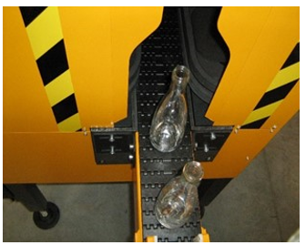
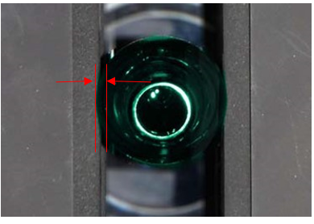

Container Handling - Tiama - MultiStation 4
INS-03-031
Revised: 2015-12-15
Purpose and Application
Purpose
To define a work instruction for proper container handling of MultiStation 4 machines.
Application
This work instruction applies to all Soul manufacturing facilities.
Safety
Observe Soul standard safety requirements and procedures defined by the Global Environmental
Health & Safety (EH&S) organization, as well as all applicable local, regional, and
national requirements. Safety equipment and instructions specific to the completion of this
work instruction are detailed in the Instructions Section.
Instructions
-
Before starting the work instruction activity, perform the following steps:
- Do not begin these tasks without confirmation that personnel directly involved have completed the required training associated with the work instruction activity and have reviewed this document.
- Gather necessary tools and equipment as identified below in the Equipment Section.
- Wear and use additional Personal Protective Equipment (PPE) and safety equipment required for this specific work instruction.
- Obey all applicable safety requirements and procedures.
- Notify appropriate personnel of the activity and estimated time needed to complete the tasks.
- Follow all Lockout Tagout procedures when work instruction activity requires isolating energy in the designated area. Verify energy is isolated before starting work.
-
For container handling setup, perform the following steps:
-
From the main screen, Click on the LOG button and
login to the software using the password.

-
Using the key operated switch, place the machine into manual mode.

-
Confirm proper spacing of the containers using the spacing device prior to
Multistation or MCAL.
- A minimum of 1.5 container diameters is required for the Multi, but spacing can be more if paired with another machine using the same spacer.


-
Remove or add belts depending on the container height.
- Verify the condition of the belts and replace if needed.
- Using a container that is specific to the job being run, adjust the height of the belts to achieve the best grip on the container.

-
Check the operation of the infeed photocell and adjust the sensitivity as
needed.

-
Using a container that is specific to the job being run, adjust the spacing
between the belts at the entry of the machine.
- Adapt belt spacing to the diameter of the container using the crank.
- Recommended foam compression is 2-3 mm against the container.



-
Adjust height of all cameras and light sources as a container is slowly
jogged through the machine to avoid interferences. If loading an existing job,
set height according to recorded value.

-
From the main screen, Click on the LOG button and
login to the software using the password.
-
For setup of the ejector(s) for all stations, perform the following steps:
-
Open the Distances menu.

-
Turn on the test of the ejector 1 and 2 if installed.

-
For ejector 1 and ejector 2 if installed, set the delay in ms (blowing time)
to achieve proper ejection of the container.
- Delay time depends on container size and line speed.

-
Open the Distances menu.
-
Upon completion of tasks, perform the following steps:
- Confirm the designated work area is clear and communicate to personnel the intent to restart energy.
- Perform basic housekeeping duties. Clean up the work space, tools and equipment, dispose of trash, put tools and equipment in assigned area.
- Notify appropriate personnel that the work instruction activity has been completed.
- Record and report findings and results.
- Follow appropriate instructions for notification of findings and results relating to specifications, targets and/or reaction limits.
Required Training
Before performing this work instruction, applicable personnel must be trained by an authorized trainer on the required training contents listed in this document.
Equipment
Job History Sheet
Containers of the new job to be run
Revision History
| 2015-12-15 |
Approved by Bob Morin |
|
Original Issue |